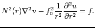

Next: About this document ...
S. D. Buckeridge
Parallel Multigrid in Numerical Weather Prediction
University of Bath
Department of Mathematical Sciences
Bath
BA27AY
UK
sdb22@bath.ac.uk
R. Scheichl
Supervisor
Fast elliptic solvers are crucial to the forecasting and data
assimilation tools used at the UK Met Office - one of the world's leading
providers of weather-related services. Some of the core equations used in
the numerical solution of weather and climate models are the
Quasi-Geostrophic Dynamical equations, in particular the
Quasi-Geostrophic Omega equation

The Met Office uses structured spherical polar grids which has the
drawback of creating strong anisotropies near the poles where the grid
lines converge. Moreover, the grid spacings in the radial direction are
much smaller since the thickness of the atmosphere is small compared to
the circumference of the Earth's surface. Additionally, the grid is
graded in this direction, with smaller grid spacings near the surface of
the Earth to obtain a better resolution in the regions of most interest,
thus creating a strong anisotropy also in the radial direction. Multigrid
methods are known for their efficiency and robustness for isotropic
elliptic problems, and remedies exist for anisotropic problems such as
semi-coarsening and line smoothing. However, since the strength of
anisotropy varies between the equator and the poles, the existing methods
must be adapted further, introducing a non-uniform coarsening strategy,
where the grid is coarsened only in regions that are sufficiently
isotropic.
The success of non-uniform coarsening strategies has been demonstrated
with Algebraic Multigrid (AMG) methods. Without the large setup costs
required by these methods, however, we aim to surpass them with the
geometric approach outlined above. Results will be given for both
sequential and parallel solves.
Next: About this document ...
Marian
2009-02-04